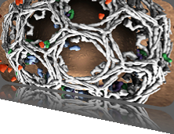

4th Symposium on Biological Data Visualization
11-12 July // Boston, MA @ ISMB
11-12 July // Boston, MA @ ISMB

Contest Data
The available data sets are derived from the WashU-Minn Human Connectome Project (HCP; http://humanconnectome.org) and are made available under HCP Open Access Data Terms. Please read these terms at http://humanconnectome.org/data/data-use-terms/open-access.html.
Correlation Networks. The primary contest data are intrinsic (“resting-state”) functional connectivity networks, which represent correlations between brain activity time series from a set of 167 brain regions (148 regions of the cerebral cortex and 19 subcortical regions). These are constructed from “minimally preprocessed” (see Glasser et al., 2013) and “cleaned” (see Smith et al., 2013) functional magnetic resonance imaging (fMRI) data, which were then subjected to additional processing including regression of mean signals from white matter and cerebrospinal fluid and of head motion estimates, bandpass filtering, and averaging across voxels from individual brain regions of interest (ROIs).
All data provided are from healthy subjects (equal numbers of males and females), age 22-30. The network, each of which is constructed from a single 15-minute scan containing 1200 whole-brain image acquisitions) is represented as a weighted adjacency matrix, or equivalently as a 167x167 correlation matrix. That is, each correlation value can be construed as an edge weight between two nodes (brain regions).
The data are provided in tab-separated text files, containing 167 rows (lines, ended by a carriage return) and 167 columns, with each entry the Pearson Correlation coefficient between a 1200-element time series representing the activity of a single brain region. Therefore, matrix entries range from -1 to 1. Entries along the diagonal (i.e., self-connections) have been set to zero.
Example subject networks. A set of 5 “example subjects” are provided. For each of these subjects, networks were constructed from 4 fMRI scans acquired in 2 separate sessions (pairs of scans were acquired back to back using a reversal of the phase encoding direction -- see http://humanconnectome.org/documentation/). A common subject code (file prefix) is used to identify which networks belong to which individual subject.
Contest subject networks. In addition, a set of networks / matrices are provided for 18 additional subjects. These networks are derived from a single scan of each subject (all subjects in this dataset are unique, and are identified by different alphanumeric codes).
Test networks. Finally, a set of 30 additional “test” networks / matrices are available. These datasets are provided with the goal of matching each network to the subject (from “Contest subject networks” above) from whom it was derived. Each of these networks was generated from a single scan (containing 1200 time points as above); some of these scans were from the same scan session as the corresponding “contest subject network,” while others were obtained in a separate session. Note that each of the 18 “contest subjects” is represented at least once in the test network dataset.
test_networks.zip file
All of the above network files are named <dataset prefix>_adjacency_matrix_pcc.txt.
Time Series. For interested participants (note that it is not required to use these data), we have also provided the region-level time series for each dataset. These are also provided in tab-separated text files, containing 167 rows (corresponding to regions) and 1200 columns (corresponding to time points). Thus, each row corresponds to the activity time series for a single brain region, averaged across voxels in that region. These files are named <dataset prefix>_time_series.txt, and are included in the zip files above containing individual networks.
Brain Region Labels. In addition, we have provided a file called roi_legend.txt, which contains 167 lines (one per brain region of interest). Each line contains two tab separated elements -- (1) the name of the brain region, and (2) an integer identifier, which can be used to “locate” that brain region in template files described below. The ROIs correspond to (i) cortical areas derived from a surface-based parcellation of each individual’s cerebral cortex using the software FreeSurfer (http://surfer.nmr.mgh.harvard.edu) and the Destrieux atlas “a2009s” (see http://ftp.nmr.mgh.harvard.edu/fswiki/CorticalParcellation; Destrieux et al., 2010) and (ii) subcortical areas derived from a volume-based segmentation also using FreeSurfer (see Fischl et al., 2002).
roi_legend.txt file
Anatomical Templates. We are additionally providing some files that participants may find useful for visualization purposes. These include surface meshes faithfully representing the geometry of the cortical hemispheres (separate files for left and right hemisphere) in both a “population average” and “representative” subject along with a legend associating vertices in the meshes with cortical region IDs (as found in roi_legend.txt). Also, we will provide 3D volumes from the same subjects, with individual entries in the volume corresponding to both cortical and subcortical region IDs.
Surface files are provided in Wavefront OBJ format (http://en.wikipedia.org/wiki/Wavefront_.obj_file), containing vertices and faces only. Volume files are provided in NIFTI-1 file format (http://nifti.nimh.nih.gov/nifti-1/). Additional text files provide the mean curvature (useful to distinguish sulci and gyri) and ROI id at each surface vertex. See also README file contained in the zip file download.
These files are made available subject to the terms of the FreeSurfer software license agreement. Please read these terms here (http://surfer.nmr.mgh.harvard.edu/registration.html).
References
Destrieux, C., Fischl, B., Dale, A., & Halgren, E. (2010). Automatic parcellation of human cortical gyri and sulci using standard anatomical nomenclature.Neuroimage, 53(1), 1-15.
Fischl, B., Salat, D. H., Busa, E., Albert, M., Dieterich, M., Haselgrove, C., ... & Dale, A. M. (2002). Whole brain segmentation: automated labeling of neuroanatomical structures in the human brain. Neuron, 33(3), 341-355.
Glasser, M. F., Sotiropoulos, S. N., Wilson, J. A., Coalson, T. S., Fischl, B., Andersson, J. L., et al. (2013). The Minimal Preprocessing Pipelines for the Human Connectome Project. NeuroImage, 80, 105-124.
Smith, S. M., Andersson, J., Auerbach, E. J., Beckmann, C. F., Bijsterbosch, J., Douaud, G., ... & Glasser, M. F. (2013). Resting-state fMRI in the Human Connectome Project. NeuroImage, 80, 144-168.
BioVis 2014 is an official SIG of ISMB

BioVis 2014 Supporters
Platinum:

Silver:


We also acknowledge the support by BMC.